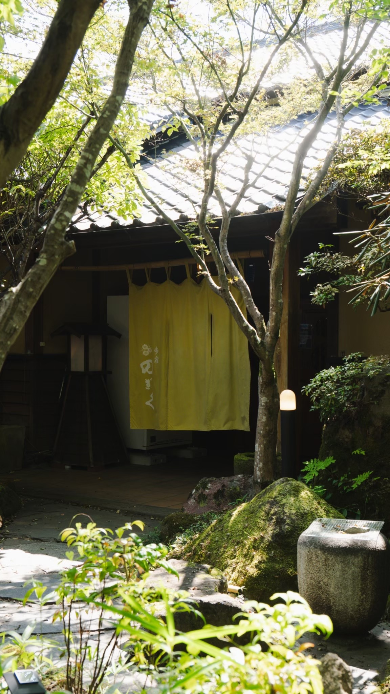
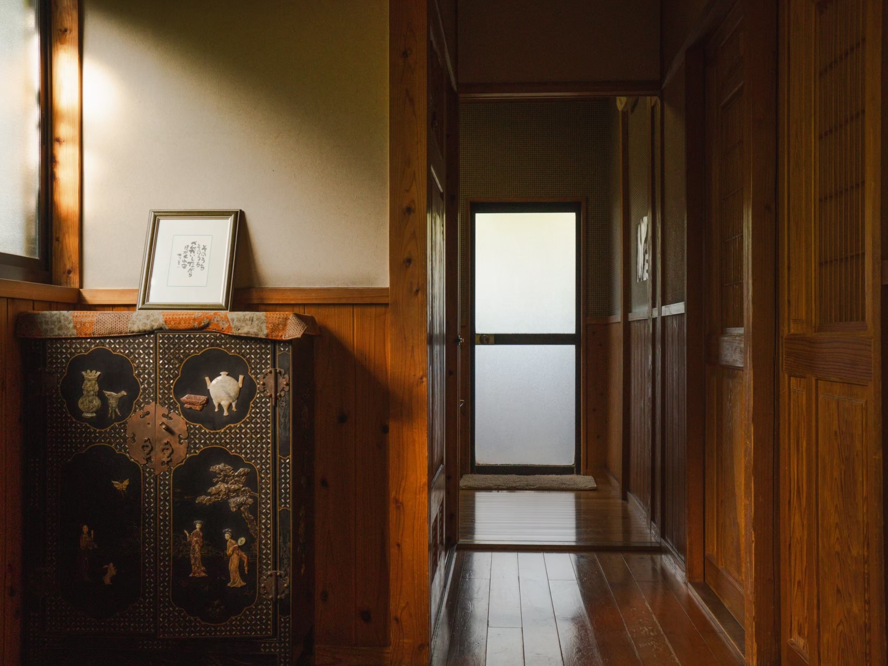
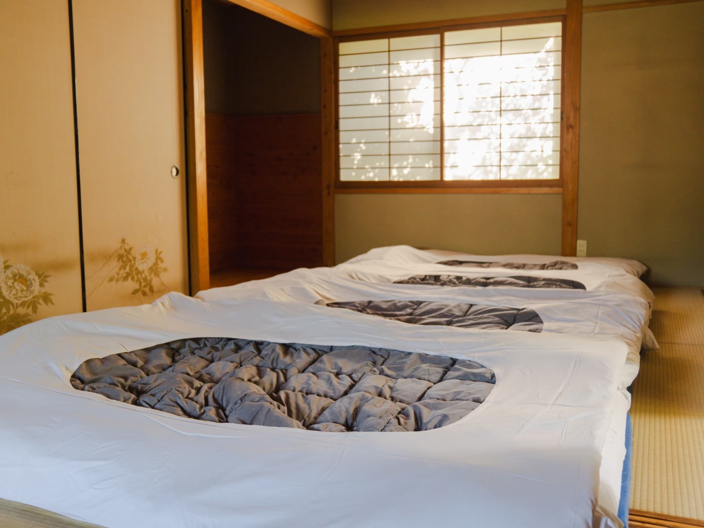
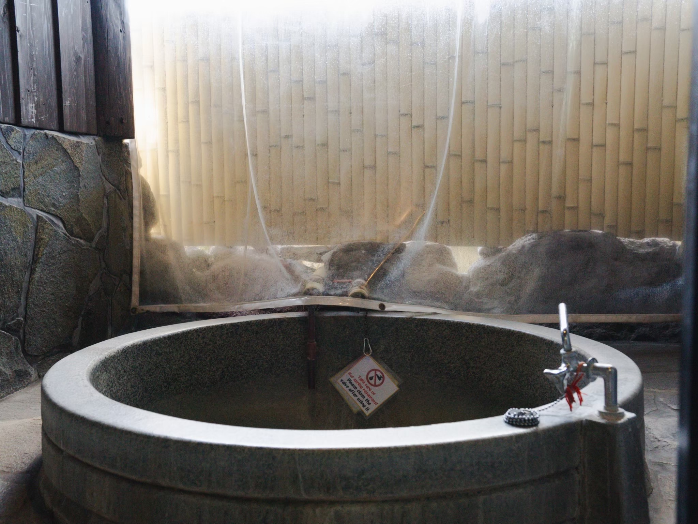

いい意味で、
ほったらかし旅館。
決まった食事の時間も、館内での過ごし方もありません。由布院の街を食卓にして、お部屋の温泉には好きなときに。必要なときには私たちを頼り、あとはどうぞ、あなたのペースで。
合わせなくていい
起きなくていい
好きなものを
お部屋の温泉へ
部屋でのんびり
古い木のぬくもりと、
静かな湯の時間。




三つの客室タイプ
全室に源泉かけ流しの客室風呂をご用意しています。写真から気になるお部屋をお選びください。
※現在の写真は客室・館内のイメージです。部屋タイプ別の写真は順次追加します。
公式サイトで予約する理由
部屋タイプを確認しながら、ご希望のお部屋を選択できます。
宿泊予約の途中で、空いている貸切枠を追加できる設計です。
日付と人数の入力後は、一名料金より税込合計額を優先表示します。
ご要望や滞在について、宿へ直接相談できます。
基本情報
〒879-5102 大分県由布市湯布院町川上2879-1
湯布院ICより車で約10分
よくある質問
食事は付いていますか？
当館は素泊まりの宿です。由布院の飲食店を自由にお楽しみください。
お部屋のお風呂は温泉ですか？
全室に源泉かけ流しの客室風呂を備えています。
貸切サウナは宿泊予約と一緒に申し込めますか？
本番予約画面では、お部屋選択後に追加できる形を予定しています。正式な枠と料金は確定後に掲載します。
子供料金はいくらですか？
対象年齢と料金区分は現在最終確認中です。確定前の仮料金は掲載せず、予約画面で正式条件をご案内します。
キャンセル料はいつからかかりますか？
予約エンジンと販売条件の確定後、予約前に確認できる形で正式な規定を掲載します。
ご予約前の確認事項
キャンセルポリシー
キャンセル料の発生日・料率、無連絡不泊の扱いは本番販売条件の確定後に掲載します。予約確定前に必ず内容をご確認いただける設計にします。
プライバシーポリシー
予約時にお預かりする氏名・連絡先等は、予約管理、連絡、サービス提供および法令上必要な対応のために利用します。予約エンジン確定後、委託先・保存期間・問い合わせ窓口を含む正式版を掲載します。
特定商取引法に基づく表示
販売事業者、運営責任者、所在地、電話番号、販売価格、支払方法・時期、サービス提供時期、キャンセル条件を、本番決済開始前に正式掲載します。現在の予約画面は決済できない試作版です。